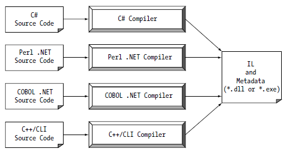

Regardless of which .NET language you choose to program with, understand that despite the fact that .NET binaries take the same file extension as COM servers and unmanaged Windows binaries (*.dll or *.exe), they have absolutely no internal similarities. For example, *.dll .NET binaries do not export methods to facilitate communications with the COM runtime (given that .NET is not COM).
Furthermore, .NET binaries are not described using COM type libraries and are not registered into the system registry. Perhaps most important, .NET binaries do not contain platform-specific instructions, but rather platform-agnostic Intermediate Language (IL) and type metadata. Figure 1-3 shows the big picture of the story thus far.
Figure 1-3 All .NET-aware compilers emit IL instructions and metadata
Note There is one point to be made regarding the abbreviation “IL.” During the development of .NET, the official term for IL was Microsoft Intermediate Language (MSIL). However, with the final release of .NET, the term was changed to Common Intermediate Language (CIL). Thus, as you read the .NET literature, understand that IL, MSIL, and CIL are all describing the same entity. In keeping with the current terminology, I will use the abbreviation CIL throughout this text.
When a *.dll or *.exe has been created using a .NET-aware compiler, the binary blob is termed an assembly. To facilitate the discussion of the .NET runtime environment, you do need to understand some basic properties of this new file format.
As mentioned, an assembly contains CIL code, which is conceptually similar to Java bytecode in that it is not compiled to platform-specific instructions until absolutely necessary. Typically, “absolutely necessary” is the point at which a block of CIL instructions (such as a method implementation) is referenced for use by the .NET runtime.
In addition to CIL instructions, assemblies also contain metadata that describes in vivid detail the characteristics of every “type” living within the binary. For example, if you have a class named SportsCar, the type metadata describes details such as SportsCar’s base class, which interfaces are implemented by SportsCar (if any), as well as a full description of each member supported by the SportsCar type. .NET metadata is always present within an assembly, and is automatically generated by a .NET-aware language compiler.
Finally, in addition to CIL and type metadata, assemblies themselves are also described using metadata, which is officially termed a manifest. The manifest contains information about the current version of the assembly, culture information (used for localizing string and image resources), and a list of all externally referenced assemblies that are required for proper execution. You'll examine various tools that can be used to examine an assembly’s types, metadata, and manifest information over the course of the next few chapters.
In a great number of cases, there is a simple one-to-one correspondence between a .NET assembly and the binary file (*.dll or *.exe). Thus, if you are building a .NET *.dll, it is safe to consider that the binary and the assembly are one and the same. Likewise, if you are building an executable desktop application, the *.exe can simply be referred to as the assembly itself. As you’ll see in Chapter 14, however, this is not completely accurate. Technically speaking, if an assembly is composed of a single *.dll or *.exe module, you have a single-file assembly. Single-file assemblies contain all the necessary CIL, metadata, and associated manifest in an autonomous, single, well-defined package.
Multi-file assemblies, on the other hand, are composed of numerous .NET binaries, each of which is termed a module. When building a multi-file assembly, one of these modules (termed the primary module) must contain the assembly manifest (and possibly CIL instructions and metadata for various types). The other related modules contain a module-level manifest, CIL, and type metadata. As you might suspect, the primary module documents the set of required secondary modules within the assembly manifest.
Note Chapter 14 will examine the distinction between single-file and multi-file assemblies in detail. Be aware, however, that Visual Studio 2010 can only be used to build single file assemblies. In the rare case that you need to build a multi-file assembly, you must make use of command-line tools.
Let’s examine CIL code, type metadata, and the assembly manifest in a bit more detail. CIL is a language that sits above any particular platform-specific instruction set. For example, the following C# code models a trivial calculator. Don’t concern yourself with the exact syntax for now, but do notice the format of the Add() method in the Calc class.
// Calc.cs
using System;
namespace CalculatorExample
{
// This class contains the app's entry point.
class Program
{
static void Main()
{
Calc c = new Calc();
int ans = c.Add(10, 84);
Console.WriteLine("10 + 84 is {0}.", ans);
// Wait for user to press the Enter key before shutting down.
Console.ReadLine();
}
}
// The C# calculator.
class Calc
{
public int Add(int x, int y)
{ return x + y; }
}
}
Once you compile this code file using the C# compiler (csc.exe), you end up with a single-file *.exe assembly that contains a manifest, CIL instructions, and metadata describing each aspect of the Calc and Program classes.
Note Chapter 2 examines the details of compiling code using the C# compiler, as well as the use of graphical IDEs such as Microsoft Visual Studio 2010, Microsoft Visual C# 2010 Express, and SharpDevelop.
For example, if you were to open this assembly using ildasm.exe (examined a little later in this chapter), you would find that the Add() method is represented using CIL such as the following:
.method public hidebysig instance int32 Add(int32 x,
int32 y) cil managed
{
// Code size 9 (0x9)
.maxstack 2
.locals init (int32 V_0)
IL_0000: nop
IL_0001: ldarg.1
IL_0002: ldarg.2
IL_0003: add
IL_0004: stloc.0
IL_0005: br.s IL_0007
IL_0007: ldloc.0
IL_0008: ret
} // end of method Calc::Add
Don’t worry if you are unable to make heads or tails of the resulting CIL for this method—Chapter 17 will describe the basics of the CIL programming language. The point to concentrate on is that the C# compiler emits CIL, not platform-specific instructions.
Now, recall that this is true of all .NET-aware compilers. To illustrate, assume you created this same application using Visual Basic, rather than C#.
' Calc.vb
Imports System
Namespace CalculatorExample
' A VB "Module" is a class that contains only
' static members.
Module Program
Sub Main()
Dim c As New Calc
Dim ans As Integer = c.Add(10, 84)
Console.WriteLine("10 + 84 is {0}.", ans)
Console.ReadLine()
End Sub
End Module
Class Calc
Public Function Add(ByVal x As Integer, ByVal y As Integer) As Integer
Return x + y
End Function
End Class
End Namespace
If you examine the CIL for the Add() method, you find similar instructions (slightly tweaked by the Visual Basic compiler, vbc.exe).
.method public instance int32 Add(int32 x,
int32 y) cil managed
{
// Code size 8 (0x8)
.maxstack 2
.locals init (int32 V_0)
IL_0000: ldarg.1
IL_0001: ldarg.2
IL_0002: add.ovf
IL_0003: stloc.0
IL_0004: br.s IL_0006
IL_0006: ldloc.0
IL_0007: ret
} // end of method Calc::Add
Note The Calc.cs and Calc.vb code files are included under the Chapter 1 subdirectory.
At this point, you might be wondering exactly what is gained by compiling source code into CIL rather than directly to a specific instruction set. One benefit is language integration. As you have already seen, each .NET-aware compiler produces nearly identical CIL instructions. Therefore, all languages are able to interact within a well-defined binary arena.
Furthermore, given that CIL is platform-agnostic, the .NET Framework itself is platform-agnostic, providing the same benefits Java developers have grown accustomed to (e.g., a single code base running on numerous operating systems). In fact, there is an international standard for the C# language, and a large subset of the .NET platform and implementations already exist for many non-Windows operating systems (more details at the conclusion of this chapter). In contrast to Java, however, .NET allows you to build applications using your language of choice.
Due to the fact that assemblies contain CIL instructions rather than platform-specific instructions, CIL code must be compiled on the fly before use. The entity that compiles CIL code into meaningful CPU instructions is a JIT compiler, which sometimes goes by the friendly name of Jitter. The .NET runtime environment leverages a JIT compiler for each CPU targeting the runtime, each optimized for the underlying platform.
For example, if you are building a .NET application to be deployed to a handheld device (such as a Windows mobile device), the corresponding Jitter is well equipped to run within a low-memory environment. On the other hand, if you are deploying your assembly to a back-end server (where memory is seldom an issue), the Jitter will be optimized to function in a high-memory environment. In this way, developers can write a single body of code that can be efficiently JIT compiled and executed on machines with different architectures.
Furthermore, as a given Jitter compiles CIL instructions into corresponding machine code, it will cache the results in memory in a manner suited to the target operating system. In this way, if a call is made to a method named PrintDocument(), the CIL instructions are compiled into platform-specific instructions on the first invocation and retained in memory for later use. Therefore, the next time PrintDocument() is called, there is no need to recompile the CIL.
Note It is also possible to perform a “pre-JIT” of an assembly when installing your application using the ngen.exe command-line tool that ships with the .NET 4.0 Framework SDK. Doing so may improve startup time for graphically intensive applications.
In addition to CIL instructions, a .NET assembly contains full, complete, and accurate metadata, which describes each and every type (e.g., class, structure, enumeration) defined in the binary, as well as the members of each type (e.g., properties, methods, events). Thankfully, it is always the job of the compiler (not the programmer) to emit the latest and greatest type metadata. Because .NET metadata is so wickedly meticulous, assemblies are completely self-describing entities.
To illustrate the format of .NET type metadata, let’s take a look at the metadata that has been generated for the Add() method of the C# Calc class you examined previously (the metadata generated for the Visual Basic version of the Add() method is similar).
TypeDef #2 (02000003)
-------------------------------------------------------
TypDefName: CalculatorExample.Calc (02000003)
Flags : [NotPublic] [AutoLayout] [Class]
[AnsiClass] [BeforeFieldInit] (00100001)
Extends : 01000001 [TypeRef] System.Object
Method #1 (06000003)
-------------------------------------------------------
MethodName: Add (06000003)
Flags : [Public] [HideBySig] [ReuseSlot] (00000086)
RVA : 0x00002090
ImplFlags : [IL] [Managed] (00000000)
CallCnvntn: [DEFAULT]
hasThis
ReturnType: I4
2 Arguments
Argument #1: I4
Argument #2: I4
2 Parameters
(1) ParamToken : (08000001) Name : x flags: [none] (00000000)
(2) ParamToken : (08000002) Name : y flags: [none] (00000000)
Metadata is used by numerous aspects of the .NET runtime environment, as well as by various development tools. For example, the IntelliSense feature provided by tools such as Visual Studio 2010 is made possible by reading an assembly’s metadata at design time. Metadata is also used by various object-browsing utilities, debugging tools, and the C# compiler itself. To be sure, metadata is the backbone of numerous .NET technologies including Windows Communication Foundation (WCF), reflection, late binding, and object serialization. Chapter 15 will formalize the role of .NET metadata.
Last but not least, remember that a .NET assembly also contains metadata that describes the assembly itself (technically termed a manifest). Among other details, the manifest documents all external assemblies required by the current assembly to function correctly, the assembly’s version number, copyright information, and so forth. Like type metadata, it is always the job of the compiler to generate the assembly’s manifest. Here are some relevant details of the manifest generated when compiling the Calc.cs code file shown earlier in this chapter (assume we instructed the compiler to name our assembly Calc.exe).
.assembly extern mscorlib
{
.publickeytoken = (B7 7A 5C 56 19 34 E0 89 )
.ver 4:0:0:0
}
.assembly Calc
{
.hash algorithm 0x00008004
.ver 1:0:0:0
}
.module Calc.exe
.imagebase 0x00400000
.subsystem 0x00000003
.file alignment 512
.corflags 0x00000001
In a nutshell, this manifest documents the set of external assemblies required by Calc.exe (via the .assembly extern directive) as well as various characteristics of the assembly itself (e.g., version number, module name). Chapter 14 will examine the usefulness of manifest data in much more detail.